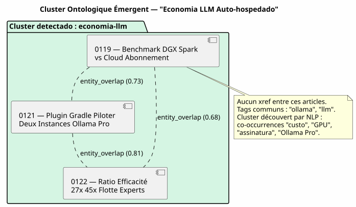

O Knowledge Graph como motor de recomendação: como eu matei os « artigos relacionados » cronológicos
Publié le 12 May 2026
- A Cena : Terça-feira, 12 de Maio, 17h30
- O Diagnóstico : Três Tipos de Relações Que Nenhum Modelo Vê
- A Solução: Um Pipeline Gradle, Não uma chamada LLM a quente
- A Ontologia Emergente: Quando os Artigos se Agrupam sem se Conhecer
- O Contrato DAG: Quem Importa Quem
- O Que Ganhamos (E O Que Não Ganhamos)
- Perspectivas: O Blog Como Knowledge Graph Público
- Conclusão: O Sistema de Arquivos Sabe o Que o Modelo Ignora
- Referências
Você está lendo um artigo sobre a integração do pgvector com o LangChain4j. Na parte inferior da página, JBake Sugere-lhe « Artigos relacionados ». Você clica. É um artigo sobre… a configuração de Kitty Terminal. O único ponto em comum entre os dois? Eles foram publicados a menos de quinze dias de diferença. Não é uma recomendação. É um calendário disfarçado de editorial.
A Cena : Terça-feira, 12 de Maio, 17h30
Estou relendo um dos meus artigos — aquele sobre o Knowledge Graph como ferramenta de compreensão de codebase O conteúdo é denso: nós, arestas, comunidades, PlantUML, onboarding. Um artigo técnica de 15 minutos de leitura que mobiliza`graphify-gradle`, plantuml-gradle, e os conceitos de topologia de grafo.
Na parte inferior da página, os « Artigos relacionados » me sugerem :
-
Um artigo sobre Firebase Contact Form (0113)
-
Um artigo sobre o mecanismo Eager/Lazy (0108)
-
Um artigo sobre a migração de script Gradle → plugin (0102)
-
Um artigo sobre o acúmulo de assinaturas Ollama Pro (0120)
Três desses quatro artigos não têm nenhuma relação com o Knowledge Graph. Eles estão lá porque são os últimos publicados — proximidade temporal, não vizinhança semântica
Estou olhando para o template`post.thyme`[No output]
<!-- Articles connexes (liens internes SEO) -->
<th:block th:each="post,postStat : ${published_posts}">
<th:block th:if="${!post.uri.equals(content.uri) and postStat.index lt 4}">
...
</th:block>
</th:block>`published_posts`é uma lista cronológica.`postStat.index lt 4`pega os Os quatro primeiros que não são o post atual. É isso. Nenhuma lógica. de similaridade. Nenhuma noção de conteúdo. Só um laço.`for`disfarçada de recomendação.
|
Não é um bug do JBake. É o comportamento padrão de tudo gerador de site estático : a lista de posts é plana e ordenada por data. O template faz o que pode com o que tem. |
Mas isso não é um motivo para aceitá-lo.
O Diagnóstico : Três Tipos de Relações Que Nenhum Modelo Vê
Meu corpus de artigos — 23 posts em 4 meses — tem uma estrutura rica que o modelo cronológico esmaga completamente :
-
Referências explícitas: eu uso`xref:`massivamente em meus artigos
O artigo 0122 referência 0106 (knowledge graph) e 0116 (compartimentamento) epistemológico). Estes links são hard linking editorial — eu tenho Decidiu deliberadamente conectar esses conceitos.
-
Tags compartilhados : cada artigo tem alguns`:jbake-tags:`. O artigo sobre
Graphify + PlantUML (0105) tem`gradle, graphify, plantuml, knowledge-graph`. O artigo sobre o Knowledge Graph (0106) tem knowledge-graph, graphify, plantuml. Três tags em comum de sete — 43% de cobertura.
-
Entidades nomeadas co‑occurrentes: « pgvector », « RAG », « embedding
aparecem juntos em quatro artigos diferentes. « LangChain4j », Ollama », « plugin Gradle » em outros seis. Não são tags declarados — são os padrões emergentes do corpus que apenas um NLP pode detectar.
Hoje, meu site não usa nenhuma dessas três camadas. Ele usa a camada zero: a ordem de inserção numa lista Java.
A Solução: Um Pipeline Gradle, Não uma chamada LLM a quente
A primeira tentação seria chamar um LLM no momento do bake : « Para Este artigo, encontra os três artigos mais semelhantes no corpus. Não faça isso
|
Uma chamada LLM para cada`./gradlew bake`custa tempo, dinheiro e introduz não-determinismo na sua construção. A resposta do LLM pode alternar entre duas builds sem que o conteúdo tenha sido alterado. Seu CI se torna não reproduzível, seus testes ficam instáveis. |
A solução é determinística: um pipeline Gradle que pré-calcula o grafo de similaridade e o armazena em`graph.json`. O modelo lê o resultado — Ele nunca desencadeia um cálculo.
A Arquitetura: Bakery importa Graphify, não Engine
Este é o ponto de arquitetura mais importante. A tentação seria de cablear a colaboração em`engine/build.gradle.kts`: motor aplica graphify para o scan, bakery para o bake, e o engine faz a ponte entre os dois
É um anti-padrão. Engine é um terminal consumidor — ele aplica dos plugins, ele não implementa lógica de negócio. A regra é: A carga da prova está no plugin proprietário.
O contrato DAG é respeitado: bakery (N2) importa graphify (N0), N2 > N0, nenhuma violação. Motor (N3) importa padaria (N2), N3 > N2, OK.
Engine não tem nenhuma linha de código que referencia`graph.json`, relatedPosts, ou qualquer outra noção de similaridade. Ele aplica bakery, ponto. a A colaboração é interna à padaria.
O Pipeline: Scan → Grafo → Modelo
Este é o pipeline completo em três etapas :
-
Scan (graphify) :`graphify-plugin`escaneia o workspace. No seu
forma atual, ele já detecta os`xref:`entre`.adoc`e os expõe em`graph.json`como das edges de tipo`reference`.
Nós o enriquecemos para o conteúdo editorial: * Analisa os metadados do JBake (:jbake-tags:, :jbake-description:) de cada`.adoc`do blog * Calcula as co-ocorrências de tags → arestas`tag_cooccurrence`com peso * Extrai as entidades nomeadas das descrições via TF-IDF → edges`entity_overlap` * Injeta uma seção`blog_articles`no`graph.json`existente
// Extrait de l'enrichissement graphify pour le blog
fun enrichBlogSection(graphJson: File, blogDir: File): GraphJson {
val articles = blogDir.listFiles { f -> f.extension == "adoc" }
.map { parseJbakeMetadata(it) }
val nodes = articles.map { ArticleNode(it.slug, it.title, it.tags) }
val edges = mutableListOf<GraphEdge>()
// Couche 1 : xref (déjà fait par scanWorkspace)
// Couche 2 : co-occurrences de tags
for (a in articles) {
for (b in articles) {
if (a.slug == b.slug) continue
val common = a.tags.intersect(b.tags)
if (common.isNotEmpty()) {
edges.add(GraphEdge(
source = a.slug,
target = b.slug,
type = "tag_cooccurrence",
weight = common.size.toDouble() / (a.tags.size + b.tags.size)
))
}
}
}
return graphJson.copy(
blogArticles = BlogSection(nodes, edges)
)
}-
Bake (padaria) : no momento do`./gradlew bake`, `BakeryPlugin`cama
`graph.json`e resolve os artigos relacionados para cada post.
// BakeryPlugin — résolution des articles connexes
fun resolveRelatedPosts(
currentSlug: String,
graph: GraphJson,
maxResults: Int = 4
): List<RelatedPost> {
val edges = graph.blogArticles.edges
.filter { it.source == currentSlug || it.target == currentSlug }
return edges
.sortedByDescending { it.weight }
.take(maxResults)
.map { edge ->
val relatedSlug = if (edge.source == currentSlug) edge.target else edge.source
graph.blogArticles.nodes.first { it.slug == relatedSlug }
}
}-
Template (
post.thyme) : o modelo JBake agora recebe um mapa
estruturada em vez de uma lista cronológica plana.
<!-- Articles connexes basés sur le Knowledge Graph -->
<th:block th:if="${relatedPosts != null and !relatedPosts.empty}">
<section class="mt-5 pt-4 border-top">
<h2 class="h4 mb-3">Articles connexes</h2>
<th:block th:each="related : ${relatedPosts}">
<div class="mb-2">
<a th:href="${content.rootpath} + ${related.uri}"
th:text="${related.title}" class="fw-semibold"></a>
<br/>
<small class="text-muted">
<th:block th:each="reason,iterStat : ${related.reasons}">
<span class="badge bg-light text-dark"
th:text="${reason}"></span>
</th:block>
</small>
</div>
</th:block>
</section>
</th:block>O modelo é o mesmo — ele não sabe de onde vêm os dados. Só o contrato entre bakery e JBake mudou :`published_posts`(lista cronológico) torna-se`relatedPosts`(mapa ponderado pelo grafo).
|
O selo « razão » (ex:`xref 0122`, |
Fallback cronológico
Si graph.json está ausente (build local sem scan prévio, primeiro implantação, CI que ainda não integrou o scan graphify), o modelo deve degradar graciosamente :
fun resolveRelatedPosts(currentSlug: String, graph: GraphJson?): List<RelatedPost> {
if (graph != null && graph.blogArticles != null) {
return resolveFromGraph(currentSlug, graph)
}
// Fallback chronologique — même comportement qu'aujourd'hui
logger.warn("[bakery] graph.json absent — fallback chronologique")
return resolveFromChronology(currentSlug)
}O comportamento padrão é idêntico ao comportamento atual. O motor de recomendação é uma melhoria progressiva — não é alteração quebra
A Ontologia Emergente: Quando os Artigos se Agrupam sem se Conhecer
A camada mais interessante é a terceira: a ontologia emergente. Artigos que não são citados, que não têm as mesmas tags, mais que falam da mesma coisa sem saber.
Vamos considerar um exemplo concreto. Três artigos do meu corpus:
-
0119 — Benchmark DGX Spark vs Cloud Assinatura LLM
-
0121 — Plugin Gradle Pilotar Duas Instâncias Ollama Pro
-
0122 — Razão Eficiência 27x 45x Frota Especialistas IA
Estes três artigos não têm nenhum xref entre eles. As tags deles não se coincidem apenas em 20% (« ollama », « llm » comuns). Mas um NLP leve sobre as descrições revela um cluster evidente: « custo », « assinatura », nuvem », « GPU », « chave da API », « Ollama Pro », « eficiência », « razão
Eles formam um cluster ontológico : a economia do LLM self-hosted vs cloud. Este cluster não é declarado em nenhum lugar. Ele emerge do corpus.

Este cluster ontológico torna-se um edge composto em`graph.json`:
{
"source": "0119-benchmark-dgx-spark",
"target": "cluster:economie-llm",
"type": "entity_cluster",
"weight": 0.73,
"metadata": {
"clusterLabel": "Économie LLM Self-Hosted vs Cloud",
"commonEntities": ["coût", "GPU", "abonnement", "Ollama Pro", "ratio"],
"articlesInCluster": [
"0119-benchmark-dgx-spark",
"0121-ollama-pro-deux-instances",
"0122-ratio-efficacite-flotte-experts"
]
}
}O NLP é intencionalmente leve — TF-IDF + similaridade cosseno sobre os descrições. Não é necessário BERT, não é necessário modelo de linguagem. O corpus contém 23 artigos, a matriz de similaridade cabe em um arquivo JSON de 50 Ko.
|
O poder do NLP não vem da sofisticação do algoritmo, mais do tamanho do corpus e da qualidade das descrições. Uma `:jbake-description:`bem escrita de 150 caracteres contém mais de sinal para TF-IDF que um artigo inteiro de 3000 palavras. |
O Contrato DAG: Quem Importa Quem
Este é o ponto onde a disciplina arquitetônica paga. O DAG N0→N3 definido em`engine/build.gradle.kts`dá uma regra simples : nenhum projeto importa um projeto de nível superior.
| Plugin consumidor | Plugin importado | Nível do consumidor | Nível importado | Válido? |
|---|---|---|---|---|
bakery-gradle |
graphify-gradle |
N2 |
N0 |
✅ N2 > N0 — OK |
motor |
bakery-gradle |
N3 |
N2 |
✅ N3 > N2 — OK |
motor |
graphify-gradle |
N3 |
N0 |
�✅ Técnica OK, mas conceitualmente errado — a colaboração é interna à bakery |
Motor aplica padaria. Padaria aplica graphify. É tudo. Se um dia Eu quero adicionar o codebase do vector store (N1) para pesquisa. semântica cross-corpus, bakery também o importa. Engine não muda.
|
O padrão é : o plugin N2 é o hub de suas próprias dependências Engine N3 não é um hub — é um terminal que aplica hubs. |
O Que Ganhamos (E O Que Não Ganhamos)
O ganho principal é editorial, não técnico :
| Antes | Depois |
|---|---|
Artigos relacionados = últimos 4 posts |
Artigos relacionados = top 4 por peso no Knowledge Graph |
Lecteur lê do RAG → recomendação Kitty Terminal |
Leitor lê do RAG → recomendação pgvector, chunking, vector store |
Zero transparência sobre o porquê |
crachá`xref 0122`, |
JBake padrão, zero esforço, zero valor |
Pipeline Gradle determinístico, reprodutível, testável |
Nenhuma curva de aprendizagem para o leitor |
O leitor descobre a topologie do meu conteúdo |
O que não se ganha :
-
Não é um « verdadeiro » motor de recomendação (sem colaborativo
filtragem, sem teste A/B, sem loop de feedback)
-
A qualidade depende da riqueza dos metadados JBake — se seus
as descrições estão vazias, TF-IDF não vê nada
-
Le NLP est offline — les nouveaux articles ne sont clusterisés qu’au
próxima varredura (isso está bom: o build permanece determinístico)
Perspectivas: O Blog Como Knowledge Graph Público
Esta funcionalidade abre uma perspectiva mais ampla: e se`cheroliv.com` estava se tornando ele mesmo um knowledge graph navigável?
Os artigos são nós. As tags são comunidades. Os xref são as arestas. O leitor não lê mais um artigo isolado — ele navega em um grafo de conhecimento do qual o artigo corrente é o ponto de entrada.
Imagine uma página inicial que exibe não a lista cronológica dos últimos posts, mas um mapa do corpus : clusters ontológicos, artigos pivô (aqueles com o maior número de arestas), caminhos de leitura recomendados (« Se você gostou do artigo sobre Graphify, leia em seguida aquele sobre o Knowledge Graph como ferramenta de compreensão «)
Não é mais um blog. É um atlas semântico.
E isso não é ficção científica. O`graph.json`já existe. Só lhe falta a interface de navegação.
Conclusão: O Sistema de Arquivos Sabe o Que o Modelo Ignora
O que eu projetei na terça-feira à noite é a substituição de uma heurística preguiçosa (a ordem cronológica) por uma representação fiel da estrutura do meu corpus (o Knowledge Graph)
O modelo`post.thyme`não muda. O que muda, é o que a gente Antes: uma lista Java ordenada por`date`. Depois : um grafo ponderado proveniente de três camadas de análise — xrefs, co-ocorrências de tags, e ontologia emergente por NLP.
O laço está fechado. graphify escaneia o workspace. Bakery lê o gráfico e alimenta o modelo. O leitor vê recomendações. pertinentes. E o motor — o maestro — nem sabe que Tudo isso existe.
É isso, a boa arquitetura. Cada plugin faz uma coisa. E o terminal do consumidor não precisa saber como.